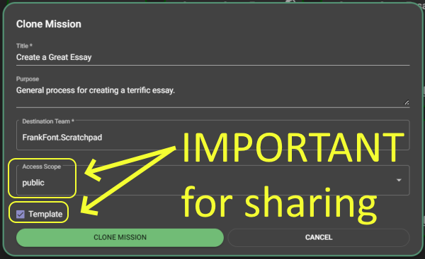

Subscribers of any paid package are able to publish templates to the public Template Discovery Page. All users can search that page looking for useful templates to adapt for their own needs.
Authors enrolled in our Content Partners Program can receive compensation based on the popularity of the templates they publish.
The first step in publishing a template is to have the Access Scope set as public.
That property can only be set when you clone a mission into a template. Here are the steps. while in edit mode. (You will find that icon in the upper left of the screen to the right of the mission's title.)
while in edit mode. (You will find that icon in the upper left of the screen to the right of the mission's title.)
Close the mission so that you are mack on the Active missions listing page.
Click the clone icon  on the mission summary card.
on the mission summary card.
Ensure the Access Scope is set to public and that the Template prompt has a checkmark before your click the CLONE MISSION button.
The following steps can be taken by users subscribed to any paid package for any template that they have created where Access Scope is set as public.
 .
.After a short time your template will appear in the searchable list of published templates.